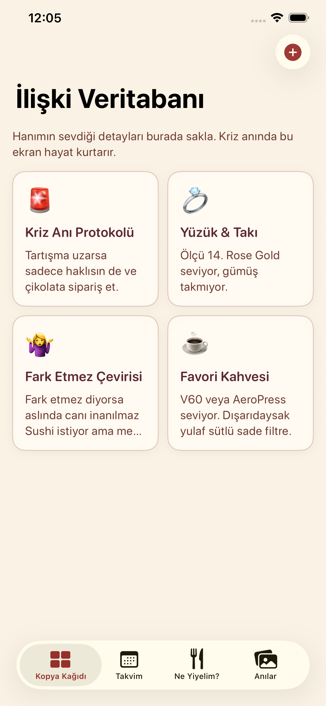
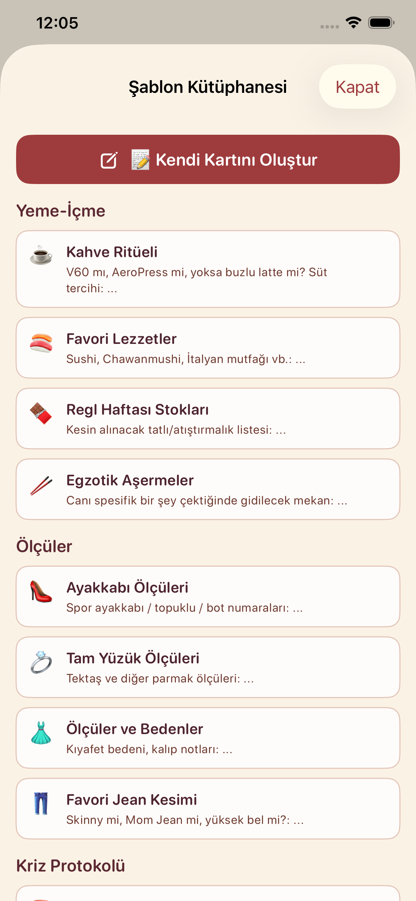
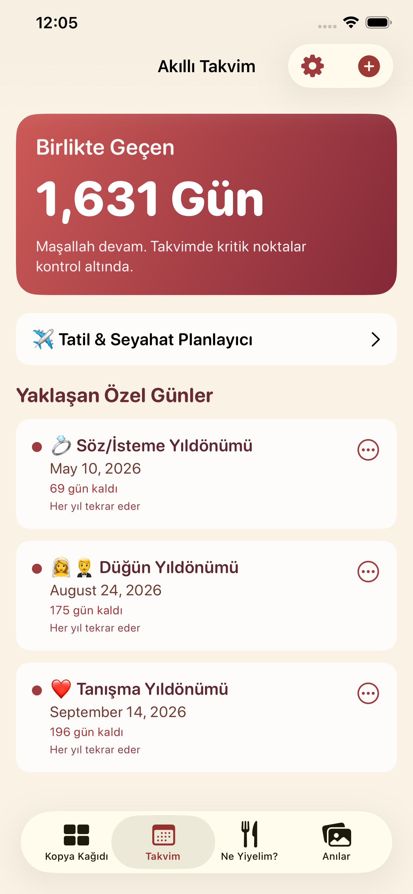
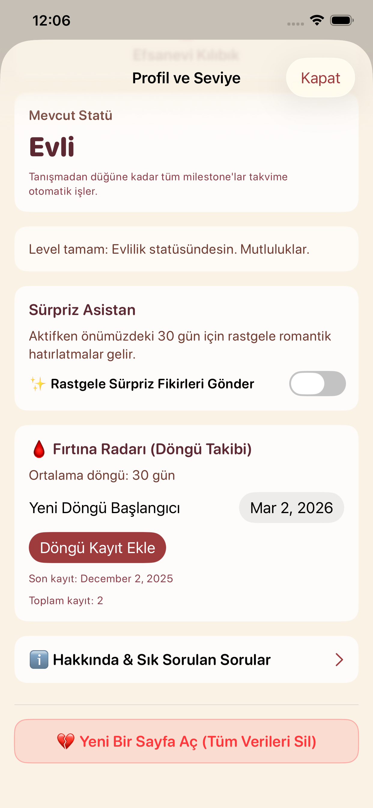
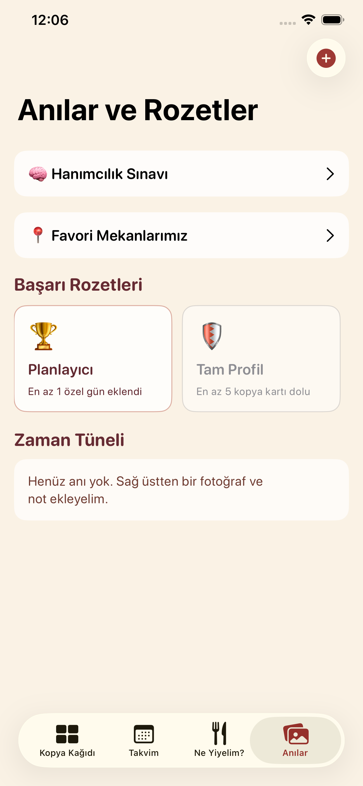

Everyday support for couples
Gunluk hayatta unutulan seyleri daha duzenli ve daha tatli bir deneyime cevirir.
iOS Product Showcase
Hanimcilik; ozel gunleri takip etmeyi, anilari saklamayi, birlikte plan yapmayi ve gunluk kararlari kolaylastirmayi tek uygulamada birlestiren relationship-focused bir lifestyle app.

Featured Product
Su an odakta Hanimcilik var. Ama bu sayfa yapisi, sonradan gelecek baska iOS uygulamalarini da ayni kaliteyle sergilemek icin tasarlandi.
Hanimcilik, ciftlerin iliskilerini daha anlamli ve daha organize yasamasina yardimci olur. Ozel gunlerden anilara, date fikirlerinden birlikte seyahat planlamaya kadar iliski icindeki bircok ihtiyaci tek yerde toplar.
Gunluk hayatta unutulan seyleri daha duzenli ve daha tatli bir deneyime cevirir.
Ne yapalim, ne yiyelim, nereye gidelim gibi kararlari birlikte kolaylastirir.



Feature Set
Yildonumu, dogum gunu ve iliski icin onemli tarihleri kaydet, widget ve hatirlatmalarla takip et.
Birlikte yasanan anlari notlar, kucuk detaylar ve iliski icin anlamli kayitlarla sakla.
Ne yiyelim, ne yapalim, nereye gidelim gibi kararlari daha kolay ve eglenceli hale getir.
Ciftler icin bulusma ve aktivite fikirleri sunarak rutin gunleri daha hareketli yapar.
Birlikte seyahat plani olustur, gidilen ya da gidilmek istenen mekanlari kaydet.
Bilgi kartlari, etkileşimli quizler ve profile tools ile iliskiyi daha yakindan kesfet.
Interface
Buraya yeni screenshot geldikce ayni estetikte devam edebiliriz. Sayfa artik klasik kart diziliminden daha guclu bir urun vitrini gibi davraniyor.



About The Builder
Hedefim; sade, duzenli ve iyi hissettiren uygulamalar yapmak. Bu site de tek bir uygulamayi bile ciddi bir urun gibi sunacak sekilde hazirlandi; yeni projeler geldikce ayni sistem buyuyebilir.
Contact